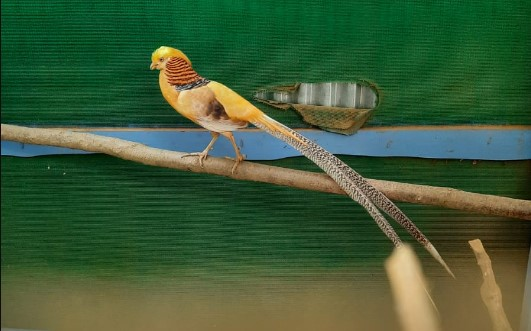
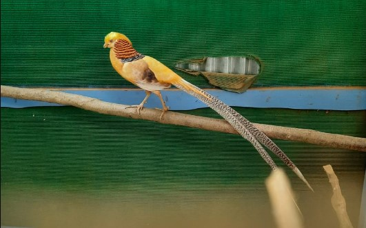

Refugio de Vida Silvestre Vistas del Cielo

En Tobosí de Cartago a los 1.890 metros de altura existe un pedacito de cielo que los fundadores llaman: Refugio de Vida Silvestre Vistas del Cielo. La propiedad esta situada lo alto de las montañas con una vista maravillosa de la ciudad de Cartago, esta propiedad es absolutamente única. Y es la opción ideal para escaparse de la ciudad y recargar energías.
Ofrece restaurante yu alojamientos en cabañas, camping, además de los chalets de "Gramping", que son su más reciente adición.
Las instalaciones cuentan con baños compartidos para la zona de Gramping y Camping. También hay un rancho con una vista excepcional que cuenta con luz, agua, mesas, sillas y electricidad para cargar los celulares o conectar la cocina y preparar sus comidas. Si no desea preparar sus comidas puede pagar para una estadía con comida incluida del restaurante. ¡Todo es muy rico y con el toque tico!

 
